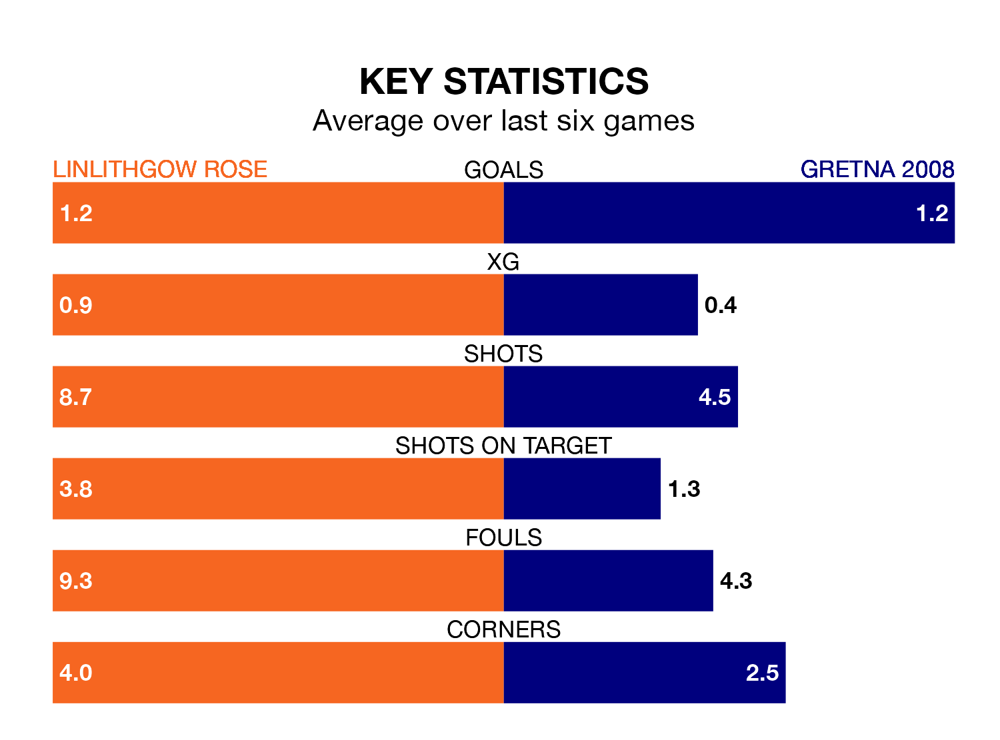

Gretna 2008 travel to Prestonfield for Saturday's match against Linlithgow Rose looking to bounce back from defeat last time out in Highland and Lowland Football Leagues.
Gretna 2008, who sit zero in the league after 17 games, fell to a 3-1 away defeat to Stirling University on November 11.
They face a Linlithgow Rose side who picked up a win in their last match, a 2-0 victory against East Stirlingshire, and who sit 17th in the table.
With nine goals in 17 games so far this season, Gretna 2008 are the league's-17rd-lowest scorers with 0.5 goals per game. And they are conceding more than average, letting in 60 goals at a rate of 3.5 per game.
Linlithgow Rose, meanwhile, are above average scorers, with 1.8 goals per game, compared to a league average of 1.7. They have conceded 1.3 goals per game.
The hosts are in mixed form in Highland and Lowland Football Leagues, with two wins and two draws from their last six games.
With a win and five losses over that period, the away team's form is worse – they have taken three points from 18, compared to Linlithgow Rose's eight.
